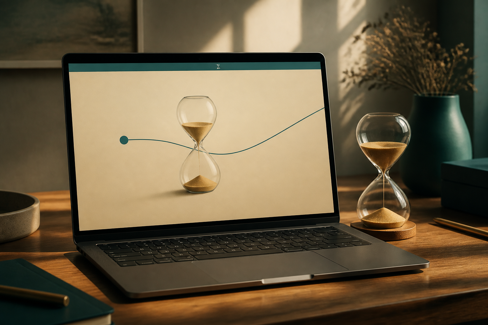
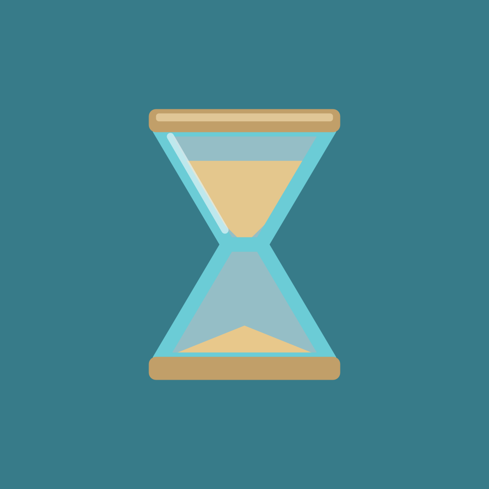

The pull
Further down,
longer timer.
A teal line follows your cursor. The hourglass turns as sand shifts. End times on the clock (:00, :15, :30, :45) click into place.

macOS 13+ Menu bar Free
An hourglass in the menu bar. Drag to choose a time, name it, and get back to work. No Dock icon. No extra window until you want one.
Apple silicon and Intel, macOS Ventura or later
Label
Interactive
Same gesture as the app. Drag down to pick a time. Quarter-hours glow sand. Release to name it.
Label
Active
The pull
A teal line follows your cursor. The hourglass turns as sand shifts. End times on the clock (:00, :15, :30, :45) click into place.
The name
Letting go opens the save window, not the timer list. Slide the time, tap a label, or type your own. Save creates a real timer.

The list
Click the icon for the list. Live countdown pills sit on every running timer. Finished ones wait under Done until you clear them.

How it works
Read the full guide for the list, expiry, settings, and the written tour.
It lives in the menu bar. The sand falls while a timer runs. Nothing else in the Dock or Cmd-Tab.
The line grows. Quarter-hours click. Drag onto the trash if you change your mind.
The save window opens under the icon: duration, labels, Save. Same window as in the app.
The menu bar counts down. When time’s up, PullTimer keeps the timer and asks what next.


macOS 13 Ventura or later. Drag to install, then pull.
Download PullTimer.dmgVersion 1.0, macOS 13 or later. Open the disk image, drag PullTimer into Applications. If macOS blocks it, right-click the app and choose Open.